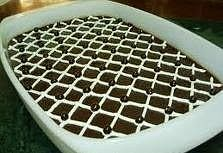

Es Puding Krim Coklat

Bahan :
- 1 buah bolu gulung berat 450 gram, siap beli
- 12 keping biskuit cokelat, potong -potong
Isi :
- 1 kaleng black cherry, tiriskan,
- air syrupnya campur dengan 1 sdm tepung maizena, didihkan.
Lapisan puding :
- 1 bungkus agar -agar bubuk D'LIGHT rasa cokelat
- 500 ml susu cair
- 200 gram gula pasir
- 1 sdm tepung maizena
- 2 putih telur
Saus :
- 200 ml susu cair
- 50 ml krim kental
- 50 gram gula pasir
- 25 gram tepung maizena
- 1 sdt vanili bubuk
- Rhum secukupnya bila suka
Hiasan :
- cokelat masak lelehkan dan buah stroberi segar
Cara Membuat :
- Siapkan pinggan tahan panas ukuran 22 cm, tata irisan bolu gulung di bagian pinggir dan dasar pinggan.
- Tata black cherry diatasnya dan siramkan syrup yang sudah dikentalkan dan ratakan diatas kue.
Lapisan puding :
- campur agar agar rasa cokelat dengan susu cair, gula pasir dan tepung maizena, aduk rata masak hingga
mendidih angkat, kocok putih telur hingga mengembang dan kaku, segera tuangkan adonan puding panas
panas aduk rata. Tuangkan adonan ke dalam loyang dan hilangkan uap panasnya.
Setelah dingin buat saus :
- campur susu cair, krim kental,gula pasir, tepung maizena dan vanili bubuk, aduk rata masak hingga mengental, angkat beri sedikit rhum bila suka dan tuangkan keatas puding dan simpan dalam lemari pendingin.
- Setelah dingin hias dengan cokelat masak dan buah stroberi segar. Sajikan dingin sebagai hidangan penutup.
Untuk : 12 potong